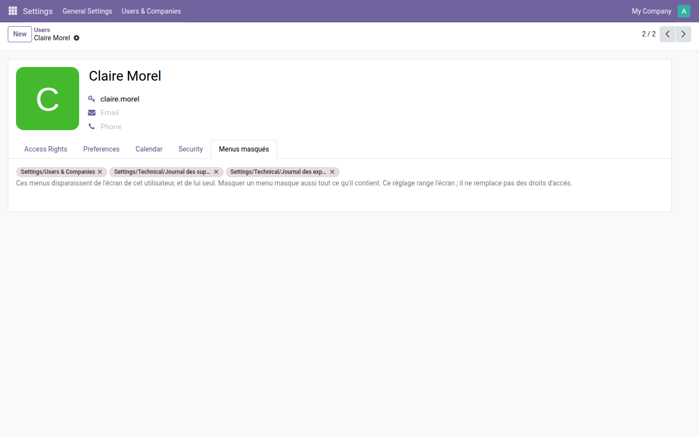
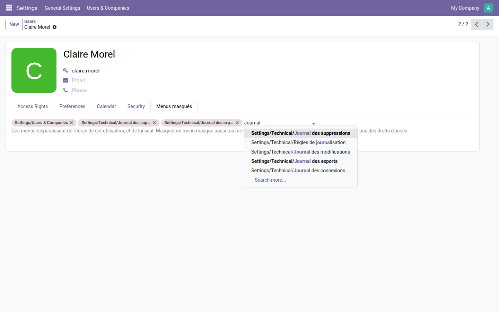

Retirez des menus de l'écran d'un utilisateur précis, sans créer de groupe ni toucher aux droits.
Un utilisateur n'a besoin que d'une partie de ce que son rôle lui ouvre. La réponse habituelle est d'inventer un groupe pour chaque exception : la matrice des droits enfle, personne ne sait plus ce que chaque groupe emporte, et la moindre mise à jour devient risquée. Pour un simple encombrement d'écran, c'est un prix démesuré.
Trois menus retirés à Claire Morel : deux journaux techniques et la section « Users & Companies ». Le chemin complet est affiché, pour qu'aucun homonyme ne prête à confusion.

Taper un mot suffit : la liste propose les menus correspondants avec leur arborescence, de la racine jusqu'à l'entrée.

À savoir : ce module range l'écran, il ne verrouille pas la donnée. Un menu masqué reste atteignable par son adresse directe. Pour interdire réellement l'accès, il faut des droits : la gamme OdooSkills compte une quinzaine de modules de cloisonnement — par équipe commerciale, par département, par projet, par journal comptable, par entrepôt. Catalogue complet : apps.odooskills.com.
Licence LGPL-3 — compatible Odoo 19.0 Community et Enterprise. Support : support@odooskills.com.